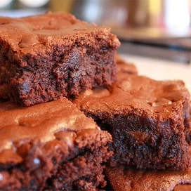

Bombshell Brownies

These brownies are the bomb! I've found the perfect combination of ingredients to make the fudgiest brownies yet... Enjoy!
Ingredients
- 1 cup butter, melted
- 3 cups white sugar
- 1 tablespoon vanilla extract
- 4 eggs
- 1 ½ cups all-purpose flour
- 1 cup unsweetened cocoa powder
- 1 teaspoon salt
- 1 cup semisweet chocolate chips
Nutrition Info
- Prep: 15 mins
- Cook: 35 mins
- Total: 50 mins
- Servings: 24
Steps
- Preheat oven to 350 degrees F (175 degrees C). Lightly grease a 9x13 baking dish.
- Combine the melted butter, sugar, and vanilla in a large bowl. Beat in the eggs, one at a time, mixing well after each, until thoroughly blended.
- Sift the flour, cocoa powder, and salt in a bowl. Gradually stir flour mixture into the egg mixture until blended. Stir in the chocolate morsels. Spread the batter evenly into the prepared baking dish.
- Bake in preheated oven until an inserted toothpick comes out clean, 35 to 40 minutes. Remove, and cool pan on wire rack before cutting.